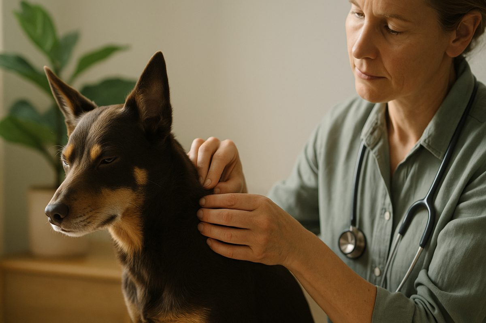
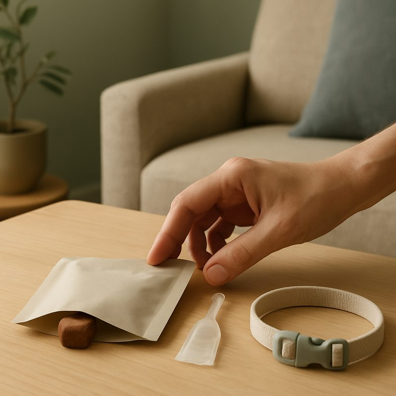

Flea, tick & parasite treatment for Australian pets

Most Australian pets need year-round parasite prevention against four things: fleas, ticks (paralysis and brown dog), intestinal worms and heartworm. The right product depends on where you live, whether your dog swims or hikes, and whether you've got dogs, cats or both. Below: the honest product comparison, real costs (about $20 to $30 a month per dog), and the one parasite worth losing sleep over.
If you'd rather skip the reading and just get a plan tailored to your pet, your postcode and your patience for daily tablets versus monthly chews, get a parasite prevention plan from a registered vet. The rest of this page is for the curious or the price-checking.
The four parasites Australian pets actually fight
Most prevention conversations in Australia start with fleas, but fleas are the least dangerous of the four. The serious ones are ticks and worms, in that order.
- Fleas. Annoying, itchy, and the source of nine out of ten of the "my dog won't stop scratching" calls in summer. Rarely deadly. Easy to prevent. Painful to eradicate once they're in your house.
- Ticks. The Australian paralysis tick (Ixodes holocyclus) lives along the east coast and can paralyse and kill a dog or cat in 3 to 5 days from attachment. Brown dog ticks carry less drama but cause skin infections and anaemia in heavy infestations.
- Intestinal worms. Roundworm, hookworm, whipworm and tapeworm. Common in puppies and kittens, less so in adults on regular prevention. Some species (hydatids, hookworm) can transfer to humans, particularly children.
- Heartworm. Mosquito-borne. Slow, expensive and difficult to treat once established, which is why monthly or annual prevention is the standard recommendation.
One product rarely covers all four. The combinations that do tend to be vet-only and a bit dearer. The combinations sold at supermarkets usually cover fleas and one or two worms, and sometimes one type of tick. Read the active ingredients, not the front of the box.
The seasonal calendar
Australia's parasite seasons depend on where you live. Use this as a rough guide, then check with a local vet if your area's borderline.
| Region | Flea peak | Tick peak | Heartworm risk |
|---|---|---|---|
| Coastal NSW & QLD | Year-round | Sept to Feb (paralysis) | Year-round |
| Inland NSW & VIC | Oct to April | Brown dog tick year-round | Spring to autumn |
| Tasmania | Nov to March | Low | Low but rising |
| SA & WA | Oct to April | Low for paralysis | Spring to autumn |
| NT & tropical QLD | Year-round | Year-round | Year-round |
The honest version: if you live anywhere east of the Great Dividing Range, north of Sydney, or near bush, year-round prevention is the safe call. The "I'll just do summer" approach is how dogs end up at emergency vets in October.
Vet-only vs over-the-counter, the honest comparison
Most pet owners ask one question: do I really need the vet-only stuff, or will the supermarket option work? The answer is genuinely "it depends".
Where over-the-counter is fine
- Adult indoor cats with no outdoor exposure
- Healthy adult dogs in flea-only zones (parts of inland SA, WA)
- Cost-conscious owners using flea prevention plus a separate vet-only worming product
Where vet-only earns its price
- Anywhere on the east coast bush margin in spring or summer
- Dogs that swim weekly (washes off most spot-ons within days)
- Puppies under 6 months, cats with kidney issues, or any pet on long-term medications
- Multi-pet households where one weak link means re-infestation
The brand wars (NexGard vs Bravecto vs Simparica) matter less than people think for most healthy adults. What matters is whether the product covers paralysis tick if you're in a paralysis-tick zone. Tell us when not to use a product like this: if your dog has a history of seizures, isoxazoline-class chews (NexGard, Bravecto, Simparica) carry a small additional risk and an alternative may be safer. Worth a five-minute conversation with a vet, not a guess from the box.
Paralysis tick, the one to lose sleep over
The Australian paralysis tick is the only common parasite in this country that routinely kills healthy adult pets. It costs Australian pet owners thousands per case in antiserum and intensive care, and even with treatment, around 5% of dogs that develop full paralysis don't survive.
The tick injects a neurotoxin while feeding. Symptoms appear about 3 to 5 days after attachment: weakness in the back legs, change in voice or bark, vomiting, difficulty swallowing, laboured breathing. Once a pet is showing symptoms, every hour matters.
If you suspect paralysis tick
Don't wait for an appointment. Drive straight to the nearest emergency vet. Bring the tick if you've removed it. Antiserum exists, but it works best early. The emergency vet guide has the closest 24-hour clinics by suburb.
Prevention against paralysis tick is non-negotiable in tick country. Bravecto chews give 3 months of cover, Simparica TRIO is monthly and covers worms too, and Frontline Spray (every 3 weeks) is the only option that's safe for puppies under 8 weeks. Tick collars (Seresto) work but reduce in efficacy if the pet swims.
What good prevention costs
Prevention is, almost without exception, cheaper than treatment. The annual injection plus monthly chew approach is the lowest-friction option for forgetful owners and tends to come out roughly $20 a month all-in. If cost is a barrier, the vet payment plans guide covers options.

Common mistakes
- Treating the pet but not the house. Around 95% of a flea population lives in carpet, bedding and cracks, not on the animal. A spot-on alone won't end a household infestation.
- Using a dog product on a cat. Permethrin is in many dog products and is highly toxic to cats. This kills cats every year in Australia. Read the label.
- Buying online without checking expiry. Spot-ons are fine, but oral chews from grey-market sellers can be near expiry or improperly stored.
- Skipping winter in tick country. Paralysis tick activity drops in winter but doesn't stop. Two-month gaps mid-winter are how dogs get bitten in August.
- Worming the puppy once and forgetting. Puppies need worming every 2 weeks until 12 weeks old, then monthly until 6 months. The puppy vaccination schedule covers the full timeline.
Straight answers
Can I use a dog flea treatment on my cat?
No. Many dog products contain permethrin, which is highly toxic to cats and causes seizures and death. Use a cat-specific product, or one labelled safe for both.
How often should I check my dog for ticks?
In tick country, after every walk in long grass or bush. Behind the ears, under the collar, between the toes, under the tail and around the eyes. The full search takes about 5 minutes.
Are natural flea remedies effective?
Some help with mild flea pressure (diatomaceous earth, regular bathing, vacuuming). None reliably prevent paralysis tick. For tick country, vet-recommended chemical prevention is the only safe approach.
What's the difference between Bravecto and Simparica?
Bravecto chews last 3 months and cover fleas and ticks. Simparica TRIO is monthly and adds heartworm and intestinal worms. Both are isoxazoline-class chews; safety profiles are similar in healthy adult dogs.
Does my indoor cat need flea prevention?
If you have a dog that goes outside, yes. If you don't, and your cat is genuinely indoor-only with no balcony access, the risk is low but not zero. Most vets still recommend a basic flea product, particularly for households with children.
Can heartworm be treated if my dog catches it?
Yes, but treatment is expensive ($1,500 to $3,000), takes months, and carries risks (the dying worms can cause complications). Prevention costs about $200 a year. The maths is straightforward.
Parasite prevention is one of the few areas of pet health where doing nothing is genuinely worse than doing something average. A consistently used average product beats an occasionally used premium one, every time. If you're unsure which combination suits your pet, your area and your budget, find a registered vet for a five-minute conversation. Information here is general and isn't a substitute for veterinary advice. Worming treatment, dog grooming and ringworm in cats cover related topics.